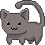

·随笔
首页
目录
梦境
札记
目录
---| 2026 |---
- 出发，到新的沉静与天地中去
---| 2025 |---
- 短篇小说
- 待在适合自己的角落
- 雾气穿过她年轻的脖子
- 九月
- 放轻松
- 技能考试
- 小满
- 当我谈论起2024时
---| 2024 |---
- 冬至快乐
- 解放之歌
- 自我攻略
- 多喝茶
- 柿柿如意
- 闲谈临床
- 野火
- 每次你走的時分
- 沉默今夜
- 游戏人生
- Chess
- 离开北京
- 跨过那座考试山
- 树立社交的旗帜
- 自评
- RAIN
- 蔑视基诺
- 诚实的生活方式
---| 2020-2023 |---
- 寻清净处
- 唯一不变的就是变化
- 我不过如此热爱这个世界
- 散场
- 《美学原理》笔记
- 《问刘十九》
- 《小王子》
- 大抵是半个鲁迅
- 进一寸有一寸的欢喜
- 如歌的行板
- 平凡的时刻
- 创新港
- 徐涛
---| 2018-2019 |---
- 醒来
- Eternal Law